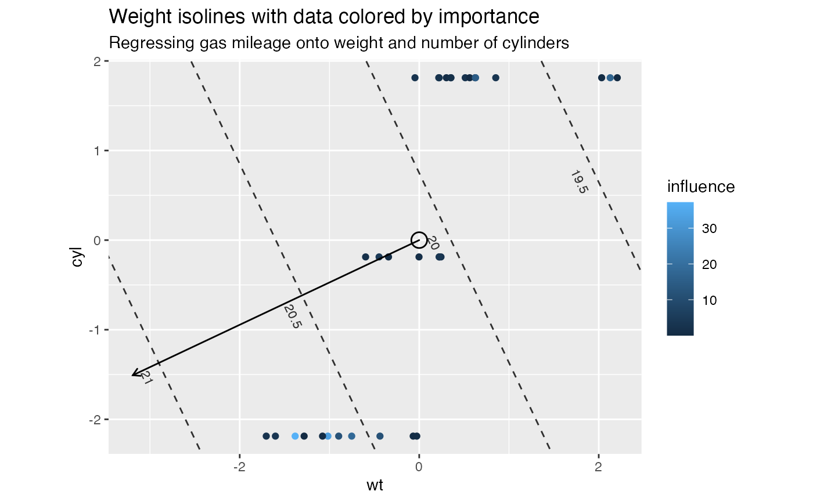

These methods extract data from, and attribute new data to,
objects of class "lm", "glm", and "mlm" as returned by stats::lm()
and stats::glm().
# S3 method for lm
as_tbl_ord(x)
# S3 method for lm
recover_rows(x)
# S3 method for lm
recover_cols(x)
# S3 method for lm
recover_coord(x)
# S3 method for lm
recover_aug_rows(x)
# S3 method for lm
recover_aug_cols(x)
# S3 method for lm
recover_aug_coord(x)
# S3 method for glm
recover_aug_rows(x)
# S3 method for mlm
recover_rows(x)
# S3 method for mlm
recover_cols(x)
# S3 method for mlm
recover_coord(x)
# S3 method for mlm
recover_aug_rows(x)
# S3 method for mlm
recover_aug_cols(x)
# S3 method for mlm
recover_aug_coord(x)An ordination object.
The recovery generics recover_*() return core model components, distribution of inertia,
supplementary elements, and intrinsic metadata; but they require methods for each model class to
tell them what these components are.
The generic as_tbl_ord() returns its input wrapped in the 'tbl_ord'
class. Its methods determine what model classes it is allowed to wrap. It
then provides 'tbl_ord' methods with access to the recoverers and hence to
the model components.
Other methods for idiosyncratic techniques:
methods-kmeans
Other models from the stats package:
methods-cancor,
methods-cmds,
methods-factanal,
methods-kmeans,
methods-prcomp,
methods-princomp
# Motor Trend design and performance data
head(mtcars)
#> mpg cyl disp hp drat wt qsec vs am gear carb
#> Mazda RX4 21.0 6 160 110 3.90 2.620 16.46 0 1 4 4
#> Mazda RX4 Wag 21.0 6 160 110 3.90 2.875 17.02 0 1 4 4
#> Datsun 710 22.8 4 108 93 3.85 2.320 18.61 1 1 4 1
#> Hornet 4 Drive 21.4 6 258 110 3.08 3.215 19.44 1 0 3 1
#> Hornet Sportabout 18.7 8 360 175 3.15 3.440 17.02 0 0 3 2
#> Valiant 18.1 6 225 105 2.76 3.460 20.22 1 0 3 1
# regression analysis of performance measures on design specifications
mtcars_centered <- scale(mtcars, scale = FALSE)
mtcars_centered %>%
as.data.frame() %>%
lm(formula = mpg ~ wt + cyl) %>%
print() -> mtcars_lm
#>
#> Call:
#> lm(formula = mpg ~ wt + cyl, data = .)
#>
#> Coefficients:
#> (Intercept) wt cyl
#> 6.721e-16 -3.191e+00 -1.508e+00
#>
# wrap as a 'tbl_ord' object
(mtcars_lm_ord <- as_tbl_ord(mtcars_lm))
#> # A tbl_ord of class 'lm': (32 x 3) x (1 x 3)'
#> # 3 coordinates: (Intercept), wt, cyl
#> #
#> # Rows: [ 32 x 3 | 0 ]
#> `(Intercept)` wt cyl |
#> |
#> 1 1 -0.597 -0.188 |
#> 2 1 -0.342 -0.188 |
#> 3 1 -0.897 -2.19 |
#> 4 1 -0.00225 -0.188 |
#> 5 1 0.223 1.81 |
#>
#> #
#> # Columns: [ 1 x 3 | 0 ]
#> `(Intercept)` wt cyl |
#> |
#> 1 6.72e-16 -3.19 -1.51 |
# augment everything with names, predictors with observation stats
augment_ord(mtcars_lm_ord)
#> # A tbl_ord of class 'lm': (32 x 3) x (1 x 3)'
#> # 3 coordinates: (Intercept), wt, cyl
#> #
#> # Rows: [ 32 x 3 | 7 ]
#> `(Intercept)` wt cyl | name hat sigma cooksd wt.res
#> | <chr> <dbl> <dbl> <dbl> <dbl>
#> 1 1 -0.597 -0.188 | 1 Mazda… 0.0548 2.60 5.08e-3 -1.28
#> 2 1 -0.342 -0.188 | 2 Mazda… 0.0376 2.61 4.44e-4 -0.465
#> 3 1 -0.897 -2.19 | 3 Datsu… 0.0798 2.52 5.68e-2 -3.45
#> 4 1 -0.00225 -0.188 | 4 Horne… 0.0321 2.61 1.80e-3 1.02
#> 5 1 0.223 1.81 | 5 Horne… 0.0912 2.58 2.35e-2 2.05
#> # … with 27 more rows, and 2 more
#> # variables: .fit <dbl>,
#> # .se.fit <dbl>
#> #
#> # Columns: [ 1 x 3 | 1 ]
#> `(Intercept)` wt cyl | name
#> | <chr>
#> 1 6.72e-16 -3.19 -1.51 | 1 mpg
# calculate influences as the squares of weighted residuals
mutate_rows(augment_ord(mtcars_lm_ord), influence = wt.res^2)
#> # A tbl_ord of class 'lm': (32 x 3) x (1 x 3)'
#> # 3 coordinates: (Intercept), wt, cyl
#> #
#> # Rows: [ 32 x 3 | 8 ]
#> `(Intercept)` wt cyl | name hat sigma cooksd wt.res
#> | <chr> <dbl> <dbl> <dbl> <dbl>
#> 1 1 -0.597 -0.188 | 1 Mazda… 0.0548 2.60 5.08e-3 -1.28
#> 2 1 -0.342 -0.188 | 2 Mazda… 0.0376 2.61 4.44e-4 -0.465
#> 3 1 -0.897 -2.19 | 3 Datsu… 0.0798 2.52 5.68e-2 -3.45
#> 4 1 -0.00225 -0.188 | 4 Horne… 0.0321 2.61 1.80e-3 1.02
#> 5 1 0.223 1.81 | 5 Horne… 0.0912 2.58 2.35e-2 2.05
#> # … with 27 more rows, and 3 more
#> # variables: .fit <dbl>,
#> # .se.fit <dbl>, influence <dbl>
#> #
#> # Columns: [ 1 x 3 | 1 ]
#> `(Intercept)` wt cyl | name
#> | <chr>
#> 1 6.72e-16 -3.19 -1.51 | 1 mpg
# regression biplot with performance isolines
mtcars_lm_ord %>%
augment_ord() %>%
mutate_cols(center = attr(mtcars_centered, "scaled:center")[name]) %>%
mutate_rows(influence = wt.res^2) %T>% print() %>%
ggbiplot(aes(x = wt, y = cyl, intercept = `(Intercept)`)) +
#theme_biplot() +
geom_origin(marker = "circle", radius = unit(0.02, "snpc")) +
geom_rows_point(aes(color = influence)) +
geom_cols_vector() +
geom_cols_isoline(aes(center = center), by = .5, hjust = -.1) +
ggtitle(
"Weight isolines with data colored by importance",
"Regressing gas mileage onto weight and number of cylinders"
)
#> # A tbl_ord of class 'lm': (32 x 3) x (1 x 3)'
#> # 3 coordinates: (Intercept), wt, cyl
#> #
#> # Rows: [ 32 x 3 | 8 ]
#> `(Intercept)` wt cyl | name hat sigma cooksd wt.res
#> | <chr> <dbl> <dbl> <dbl> <dbl>
#> 1 1 -0.597 -0.188 | 1 Mazda… 0.0548 2.60 5.08e-3 -1.28
#> 2 1 -0.342 -0.188 | 2 Mazda… 0.0376 2.61 4.44e-4 -0.465
#> 3 1 -0.897 -2.19 | 3 Datsu… 0.0798 2.52 5.68e-2 -3.45
#> 4 1 -0.00225 -0.188 | 4 Horne… 0.0321 2.61 1.80e-3 1.02
#> 5 1 0.223 1.81 | 5 Horne… 0.0912 2.58 2.35e-2 2.05
#> # … with 27 more rows, and 3 more
#> # variables: .fit <dbl>,
#> # .se.fit <dbl>, influence <dbl>
#> #
#> # Columns: [ 1 x 3 | 2 ]
#> `(Intercept)` wt cyl | name center
#> | <chr> <dbl>
#> 1 6.72e-16 -3.19 -1.51 | 1 mpg 20.1
